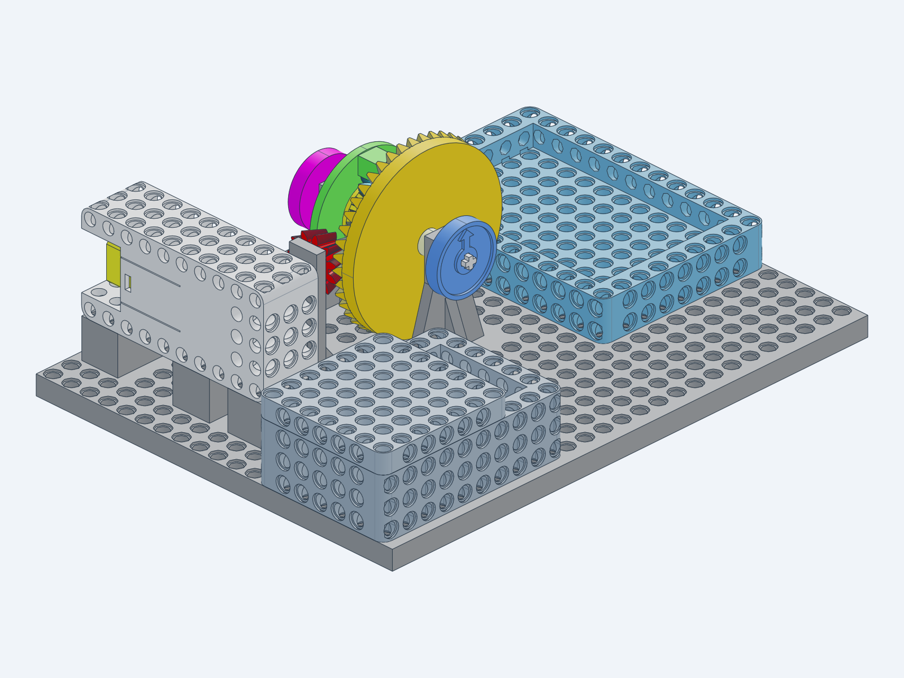
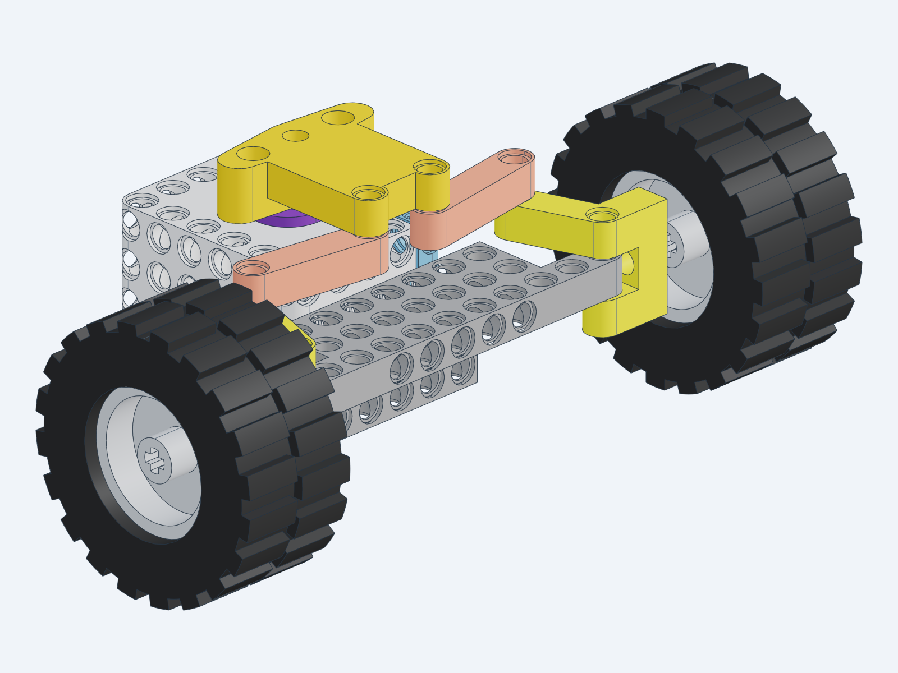
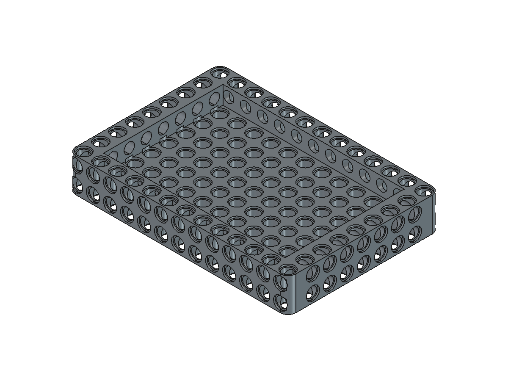

差速轉向車模型（電動差速器＋MG90S 轉向）
Differential Drive Car with Servo Steering
把「電動差速器」放到後軸、「MG90S 前輪轉向」放到前軸，加上 3×AAA 電池盒與麵包板，組成一台 LEGO Technic 相容的四輪車。驅動模組、轉向模組各自組好、單獨測試，再用 Technic 2L 銷由上往下插在中段底盤上。附 3D 動畫頁示範模組化組裝，以及轉彎時差速器怎麼讓內外後輪轉速不同。
car_assembly_preview
重點規格
- 軸距／輪距
- 160 mm／前 134、後 130 mm
- 輪子
- 前 Ø56 × 26 氣球胎、後 Ø81.6 × 15 機車輪，都是 LEGO 標準輪
- 整車
- 193 × 229 × 96 mm，最低點離地 7.5 mm
- 結合方式
- 三層疊接，全部 Technic 2L 銷垂直插
- 最小轉彎半徑
- 約 291 mm（後軸中點）
組成零件（7 件作品）
以下零件直接沿用各自的作品；點進去可看設計說明、下載列印檔與原始碼。

後軸驅動
電動差速器教學模型
冠狀齒輪、小齒輪、行星架、十字銷、行星／半軸齒輪與軸承塔設計，整組轉 180° 放到後軸

差速器原型
開放式差速器教學模型
行星架、行星齒輪、半軸齒輪的原始設計，電動版沿用

前輪轉向
MG90S 伺服機前輪轉向機構（阿克曼）
整組轉向模組（伺服座、轉向車架、左右轉向節、拉桿、曲柄）一個零件都沒改，用車架平板的銷插在底盤上

馬達外框
TT 馬達 Technic 外框（Side／SideTop／Top）
SideTop 版裝 TT 馬達，插在驅動底板的墩柱上對準小齒輪

聯軸器
TT 馬達 Technic 座與聯軸器
TT 馬達軸 → LEGO 十字軸，帶動小齒輪

電池
電池盒 Technic 容器與上蓋
容器與上蓋側立在馬達左邊的底盤長條上，同時當麵包板底座的支柱

電路
麵包板 Technic 底座
麵包板底座直接插在電池盒頂和立柱上，當上層用
模組化：三組各自組好再疊起來
- 驅動模組：驅動底板（最下層，z 8–15.8）＋TT 馬達＋差速器＋後輪軸＋後輪；可以單獨通電測試馬達和差速器
- 轉向模組：伺服座掛在轉向車架的隔板上，車架平板（z 24.2）伸到兩側主銷；和單獨的轉向作品一模一樣，可以單獨測試轉向
- 中段底盤（z 16–23.8）：一片 Technic 孔板，疊在驅動底板的前緣和左側上方，再接到轉向車架平板下面
- 為什麼是三層：TT 馬達外框的下側面離地只有 20.3 mm，驅動底板只能在最下層；連接用的底盤往上一層，就不會碰到馬達
- 組裝順序：驅動模組 → 底盤往下插（2L 銷穿過底盤插進驅動底板，53 個對位孔）→ 轉向模組往下放、伺服座穿過底盤的方框（車架平板插進底盤，16 個對位孔）→ 電池盒、立柱、麵包板底座
- 舊版是一體式底盤，用側向的銷插進伺服座兩側；但兩支側臂把伺服座夾在中間，銷其實插不進去。改成全部垂直插銷後，每一組都能直直放下去
整車配置
- 車輛座標沿用轉向機構：前軸 y = 40、後軸 y = −120，軸距維持轉向設計時假設的 160 mm，阿克曼幾何不受影響
- 差速器轉 180° 放到後軸，TT 馬達在它前方、輸入軸在車身中線上；冠狀齒輪 44 齒 : 小齒輪 11 齒 = 4:1
- 冠狀齒輪的齒頂在後軸下方 33.3 mm，所以後輪用大的 LEGO 機車輪（輪胎 2902 Ø81.6 × 15＋白色 6 輻輪框 2903，軸心離地 40.8），驅動底板挖一道槽讓冠狀齒輪穿過去轉，離地 7.5 mm
- 前輪維持 Ø56 LEGO 輪（氣球胎 55976＋淺灰輪框 56145），轉向模組（伺服座、車架、轉向節、拉桿、曲柄）一個零件都沒改
新設計的零件
- 驅動底板：Technic 孔板（103.4 × 139.4 mm），帶差速器的軸承塔、小齒輪塔、外側輪軸塔與馬達墩柱
- 中段底盤：7.8 mm 平板（103.4 × 143.4 mm），77 個孔；左側長條給電池盒站，兩支側臂和前鼻接轉向車架。前段全寬只做到後輪前方，前輪打到底時還離 9.1 mm
- 後輪軸全用 LEGO 標準件、不用印：機車輪（輪胎＋輪框）、10L 十字軸穿過內外兩座軸承塔、半軸套貼外塔內側、軸套夾在外塔與輪子之間；10L 軸穿過 13.8 mm 寬的輪轂，伸出的軸端再套一個半軸套擋住輪子
- 兩根立柱：前立柱站在底盤上、後立柱站在驅動底板上（馬達後面沒有底盤），兩根長度不同、頂端和電池盒一樣高
- 不做上層平台：麵包板底座的底面本身就是整片 13 × 9 Technic 孔，直接插在電池盒頂和兩根立柱上，少印一件、車頂低 8 mm
電池盒與麵包板
- 3×AAA 電池盒寬 55.4 mm，平放塞不進馬達旁 23 mm 的空間，所以側立在馬達左邊的底盤長條上：重心低、蓋子朝外，換電池不用拆車
- 電池盒下面的孔和「底盤→驅動底板」的銷輪流用：一排給電池盒、一排給底盤
- 麵包板底座直接當上層（底面離地 79.8 mm），高過冠狀齒輪與電池盒
檢查（build123d）
- 47 個零件兩兩檢查：沒有重疊；轉向打到左右極限時，最小間隙是拉桿與伺服座 0.4 mm，前輪與底盤 9.1 mm
- 差速器轉一圈的各角度：冠狀齒輪與小齒輪沒有重疊（齒隙 0.111 mm），旋轉部分離驅動底板至少 1.6 mm
- 插銷孔逐一探測：轉向車架→底盤、底盤→驅動底板、電池盒、馬達外框、立柱、麵包板底座共 152 個孔全部對準
- 組裝順序：底盤、轉向模組、電池盒、立柱與麵包板底座，每一組直直往下放都不會撞到已裝好的零件
- FreeCAD 組立圖由組裝 STEP 匯入，47 個零件保留名稱與顏色
- 列印檔網格逐邊檢查：0 條開放邊
一次列印全部：car_all_plates.3mf
- 整台車要印的 28 件放在同一個 Bambu Studio 專案，分成 4 盤，每件都已轉好列印方向（大平面貼床）
- ① 底盤：驅動底板＋中段底盤（約 8 小時、95 g） ② 傳動：冠狀齒輪、小齒輪、行星架、十字銷、行星齒輪 ×2、半軸齒輪 ×2、差速器軸套 ×2、立柱 ×2（約 2.5 小時、37 g）
- ③ 轉向：車架、轉向節、拉桿 ×2、曲柄、雙臂舵臂、伺服座底座與側蓋（約 4.3 小時、49 g）
- ④ 馬達與電路：TT 馬達外框、聯軸器、電池盒與蓋、麵包板底座（約 11.6 小時、120 g）；合計約 26.3 小時、300 g（Bambu Lab X2D、PLA、0.4 噴嘴估算）
- LEGO 標準件一律不印：Technic 銷、十字軸（3L、10L ×2、附擋頭軸 ×2）、半軸套 ×4、軸套 ×2、前輪 Ø56 × 26 ×2、後輪 Ø81.6 × 15 機車輪 ×2；數量見動畫頁的標準件總表
- 十字孔（半軸齒輪、小齒輪、聯軸器）每邊間隙 0.15 mm：原本 0.075～0.1 mm 時十字軸插不進
- 用 Bambu Studio 命令列逐盤切片確認 4 盤都能切；28 件網格都是 0 條開放邊；零件間留 15 mm，給 5 mm 自動 brim
3D 動畫頁
- 組裝步驟：14 步，先組驅動模組、在車前方另外組轉向模組，再放底盤、把整組轉向模組移到車頭往下放，最後裝電池、立柱與麵包板底座
- 順序依實際裝得進去的方向：TT 馬達先裝，3L 輸入軸再從後方穿過小齒輪塔插進聯軸器，小齒輪套上軸端，差速器最後邊轉邊放進去咬合
- 銷、十字軸、LEGO 前輪等標準件不畫出來，每一步列出規格與數量；爆炸圖頁有標準件總表（2L 摩擦銷約 65 支等）
- 行駛示範：前輪轉角由轉向四連桿即時計算，再由轉彎中心推算四輪轉速；左打到底時內側後輪 78 %、外側 122 %
- 差速器跟著動：行星架轉速是兩後輪的平均，行星齒輪依轉速差自轉，小齒輪轉 4 倍；「轉彎中心」畫出前後輪軸線的交點
待實測
- 輪子型號依 YouTube 影片中的實車判讀；2903 輪轂寬度以 13.8 mm、十字孔穿透估算，10L 軸伸出輪轂外約 10 mm，實物裝上後確認半軸套位置
- 轉向沒有機械擋塊，伺服機要在程式裡限制在 ±17.5°；3×AAA 約 4.5 V，同時推 MG90S 與 TT 馬達可能不夠力
- 轉向模組只靠車架平板的銷固定在底盤上（伺服座掛在隔板上），實印後確認前端夠不夠穩
檔案下載
| 類型 | 說明／下載 | 大小 |
|---|---|---|
| 3MF | 全部列印零件：一個 Bambu Studio 專案，分 4 盤（底盤、傳動、轉向、馬達與電路），共 28 件，LEGO 標準件不含 car_all_plates.3mf | 12.2 MB |
| FCStd | FreeCAD 組立圖（47 個零件） car_assembly.FCStd | 2.3 MB |
| 3MF | 驅動底板（一盤，平放列印） car_drive_base.3mf | 12.5 MB |
| 3MF | 中段底盤（一盤，平放列印） car_chassis.3mf | 6.1 MB |
| 3MF | 兩根立柱（一盤） car_parts.3mf | 297 KB |
| PY | 新零件幾何與擺放（build123d） car_parts.py | 18 KB |
| PY | 整車組裝模型：三組模組、爆炸圖（build123d） car_assembly.py | 6 KB |
| PY | 列印盤排版（build123d） print_parts.py | 3 KB |
| PY | 全部零件分盤成一個 Bambu 專案的腳本 print_all.py | 13 KB |
| PY | 干涉、轉向掃掠、差速器、插銷孔、組裝順序檢查 check_car.py | 8 KB |
| PY | 冠狀齒輪嚙合與行星架旋轉檢查 check_mesh.py | 1 KB |
| PY | 產生 FreeCAD 組立圖的腳本 build_assembly.py | 3 KB |
FCStd 用 FreeCAD 1.1 開啟（參數在 Params 試算表）；3MF 可直接拖進 Bambu Studio 或其他切片軟體。